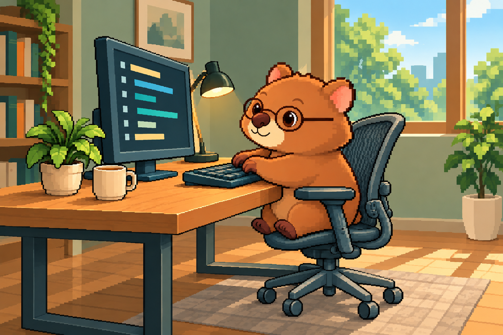
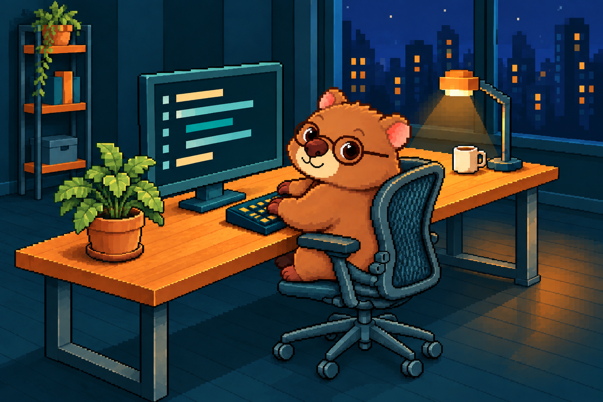
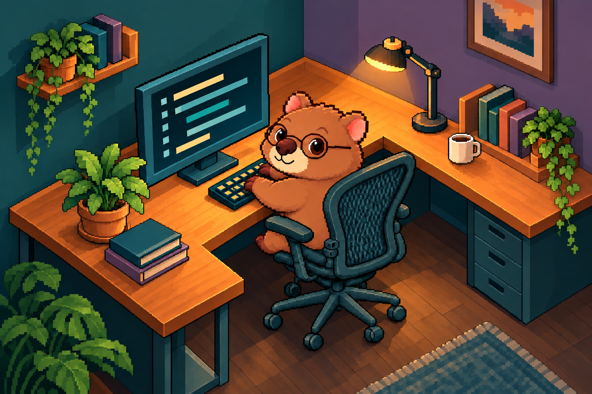
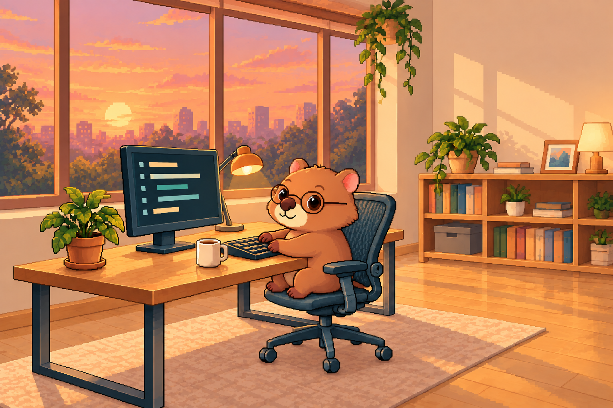
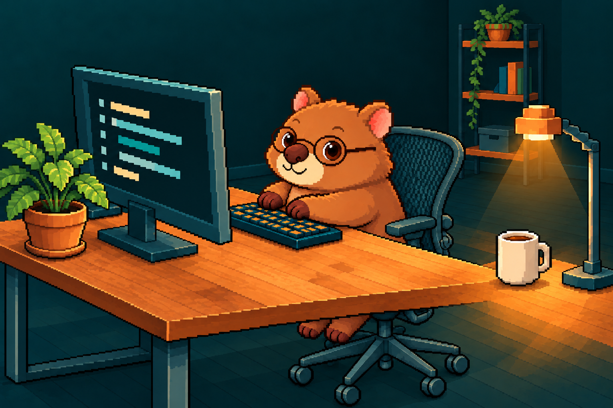

01눈높이 옆자리
옆이나 앞에서 본 자연스러운 타이핑 자세.
BABY WOMBAT / POSE × COMPOSITION / 01–05
자세와 바라보는 위치가 다른 다섯 장면을 비교해 보세요. 이미지를 누르면 원본을 새 탭에서 볼 수 있습니다.
기준 이미지 원본 보기 (새 탭)
옆이나 앞에서 본 자연스러운 타이핑 자세.

몸과 의자를 함께 돌린 시선.

높이를 두고 내려다본 코너 구도.

작업실과 창가가 함께 보이는 장면.

책상 앞쪽에서 바라본 아기 웜뱃.